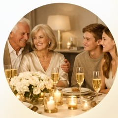
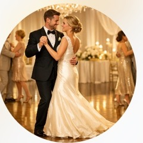

Wunschgäste
Buchen Sie uns für Ihre Feier
Wir sind die Gäste, die Ihre Feier harmonisieren. Gäste, die auf Ihrer Feier diplomatisch und deeskalierend wirken und das allgemeine Wohlbefinden fördern.
Gereifte, innerlich ausgeglichene, authentische Menschen für Ihre Hochzeit & Familienfeier
Keine Moderatoren. Keine Show. Keine Stimmungsmacher. Keine Darsteller. Keine Partymacher. Keine Animateure. Echte Menschen, die auf Ihrer Feier für Ausgleich in zwischenmenschlichen Konstellationen sorgen. Menschen, welche die allgemeine Anspannung durch eigene natürliche Gelassenheit und innere Ruhe reduzieren.
Über Wunschgäste – Wer wir sind
Wir stellen keine Moderatoren, DJs oder Zeremonienmeister. Wir sind authentische Menschen mit natürlicher Gelassenheit und innerer Ruhe, die das positive Klima Ihrer Feier von innen heraus fördern. Keine Darsteller. Keine Show. Echte Präsenz.
Traditionelle Agenturen
- Stehen auf der Bühne
- Führen ein Programm durch
- Lenken Aufmerksamkeit auf sich
- Performance
Wunschgäste
- Mischen sich unter Gäste
- Beteiligen sich aktiv am Programm
- Lenken Fokus auf Ihre Gäste
- Echte Präsenz
Regulierende Wirkung
Wir wirken als Anker der Sicherheit und helfen dabei, Menschen und Situationen sanft zu harmonisieren.
Stabilität
Wir bleiben ruhig und gefasst, handeln überlegt und bringen innere Ruhe in jede Situation.
Freundlichkeit
Wir treten in natürliche und authentische Interaktion mit Ihren Gästen – offen, warm und unaufdringlich.
Nutzen für die Gruppe
Wir sorgen für ein positives Feierklima und senken das allgemeine Stressniveau spürbar.
Was wir tun
Wir harmonisieren Ihre Feier. Diskret, wirkungsvoll und mit echter menschlicher Wärme. Wir agieren dort, wo soziale Spannung entsteht – und verwandeln sie in Verbindung.

Soziale Brückenbauer
Wir helfen dabei, dass sich alle wohlfühlen – egal ob Großeltern, Teenager oder internationale Gäste.
Konfliktmanagement
Wir nehmen Spannungen zwischen Gästen frühzeitig wahr und kanalisieren sie behutsam in positive Energie – bevor sie die Feier belasten.
Eisbrecher mit Klasse
Wir initiieren Gespräche und lockern stockende Situationen auf – diskret, natürlich und mit echtem Interesse an den Menschen.

Energie-Transfer
Wir sind bei Bedarf die Ersten, die tanzen, lachen und feiern – und laden so andere Gäste ein, es uns gleichzutun. Freude ist ansteckend.
Perfekt für …
Wer steckt dahinter?
Wir als Ihre Wunschgäste sind keine Schauspieler, sondern echte Menschen mit hoher sozialer und emotionaler Intelligenz. Gereift, sicher im Umgang mit anderen und mit feinem Gespür für Situationen.
Worauf wir achten
Was uns auszeichnet
Soziale Dynamik
Wir lesen Gruppenstimmungen und verbinden Menschen, bevor Distanz entsteht.
Deeskalation
Konflikte werden ruhig erkannt und unauffällig entschärft.
Stimmung
Wir bringen Leichtigkeit hinein und reduzieren Spannungen.
Diskretion
Unsere Wirkung ist deutlich, unser Auftreten bleibt dezent.
Der Ablauf
Einfach, diskret und effektiv. Von der ersten Kontaktaufnahme bis zum gemeinsamen Feedback nach der Veranstaltung begleiten wir Sie Schritt für Schritt – transparent und verlässlich.
Anfrage
Sie kontaktieren uns mit Details zu Ihrer Veranstaltung (Datum, Ort, Gästezahl, Besonderheiten).
Beratung
Wir besprechen Ihre Erwartungen und stimmen uns auf Ihre Bedürfnisse ab.
Vorbereitung
Wir erhalten alle relevanten Informationen über Ihre Gäste und den Ablauf.
Durchführung
Wir mischen uns unter Ihre Gäste – unauffällig, aber wirkungsvoll.
Feedback
Nach der Veranstaltung tauschen wir uns aus und verbessern kontinuierlich.
Der Ablauf ist bewusst schlank gehalten – damit Sie sich auf das Wesentliche konzentrieren können: Ihren besonderen Tag.
Die Kosten variieren je nach Veranstaltungsort, -größe und individuellen Anforderungen. Wir erstellen Ihnen gern ein unverbindliches Angebot.
👉 Jetzt Kontakt aufnehmenFAQ – Häufig gestellte Fragen
Wir beantworten die wichtigsten Fragen rund um unsere Leistungen – offen, ehrlich und transparent.
Sind Wunschgäste professionelle Tänzer?
Nein. Wir sind reife Menschen mit hoher sozialer Kompetenz. Tanzen ist ein Werkzeug, um Energie zu übertragen – nicht der eigentliche Zweck unserer Arbeit.
Wie viele Wunschgäste empfehlen Sie?
Für 50–100 Gäste empfehlen wir 2 Wunschgäste. Für 100–200 Gäste sind es 4 Wunschgäste. Bei größeren Feiern beraten wir Sie individuell.
Können wir die Wunschgäste vorher kennenlernen?
Ja, selbstverständlich. Wir organisieren gerne ein persönliches Kennenlerngespräch vor der Veranstaltung – damit Vertrauen entsteht, bevor der besondere Tag kommt.
Was passiert bei einer Absage?
Wir arbeiten mit fairen und flexiblen Stornierungsbedingungen. Alle Details werden transparent im Vertrag festgehalten.
Sind Ihre Wunschgäste versichert?
Ja. Wir sind haftpflichtversichert. Sie können mit einem professionellen und rechtlich abgesicherten Service rechnen.
Wie diskret arbeiten Sie?
Wir agieren ausschließlich als Gäste unter Gästen. Ihre Gäste erleben Menschen, die positiv auf die Stimmung wirken – nicht professionelle Dienstleister.
Kontakt
Bereit für eine unvergessliche Feier?
Lassen Sie uns gemeinsam dafür sorgen, dass Ihre Gäste am Ende des Abends sagen: „Wow, was für tolle Menschen waren heute hier." Harmonie ist kein Zufall – sie beginnt mit der richtigen Entscheidung.
Wir freuen uns auf Ihre Nachricht. Schildern Sie uns Ihre Situation – unverbindlich und vertraulich. Gemeinsam finden wir heraus, wie wir Ihre Feier bereichern können.
Direkt erreichen
📧 E-Mail: kontakt@wunschgaeste.de
📍 Standort: Deutschland – bundesweite Verfügbarkeit
Unverbindlich anfragen
Teilen Sie uns die wichtigsten Eckdaten Ihrer Veranstaltung mit – wir rufen Sie zeitnah an:
- Name & Telefonnummer
- Veranstaltungsdatum und -ort
- Gästezahl und Anlass
- Besondere Hinweise oder Wünsche
Impressum & Datenschutz
Impressum
Wunschgäste.de - Beratung, Coaching, Mediation, Konfliktmanagement
Britta Mickler c/o Michael Rudolph
Burkersdorfer Weg 19
01189 Dresden
Deutschland
E-Mail: kontakt@wunschgaeste.de
Telefon: +49 163 39 36 512
Auf dieser Website werden teilweise Bilder und Visualisierungen verwendet, die ganz oder teilweise mit künstlicher Intelligenz erstellt wurden.
Verantwortlich für den Inhalt nach § 18 Abs. 2 MStV:
Britta Mickler
Burkersdorfer Weg 19
01189 Dresden
Deutschland
Datenschutzerklärung
Verantwortlich für die Datenverarbeitung auf dieser Website ist:
Britta Mickler c/o Michael Rudolph
Burkersdorfer Weg 19
01189 Dresden
E-Mail: kontakt@wunschgaeste.de
Beim Aufruf dieser Website verarbeitet der Hosting-Anbieter technisch erforderliche Daten (insbesondere IP-Adresse, Datum und Uhrzeit des Abrufs, aufgerufene Seite, Browser-Informationen), um die Website bereitzustellen und die Sicherheit und Stabilität zu gewährleisten. Die Verarbeitung erfolgt auf Grundlage von Art. 6 Abs. 1 lit. f DSGVO.
Wenn Sie uns per E-Mail kontaktieren, verarbeiten wir Ihre Angaben ausschließlich zur Bearbeitung Ihrer Anfrage. Die Verarbeitung erfolgt je nach Inhalt Ihrer Anfrage auf Grundlage von Art. 6 Abs. 1 lit. b DSGVO oder Art. 6 Abs. 1 lit. f DSGVO.
Eine Weitergabe Ihrer Daten erfolgt nur, soweit dies zur technischen Bereitstellung der Website durch unseren Hosting-Anbieter erforderlich ist oder eine gesetzliche Pflicht besteht.
Die Daten werden gelöscht, sobald sie für den jeweiligen Zweck nicht mehr erforderlich sind und keine gesetzlichen Aufbewahrungspflichten entgegenstehen.
Sie haben das Recht auf Auskunft, Berichtigung, Löschung, Einschränkung der Verarbeitung, Widerspruch sowie auf Beschwerde bei einer Datenschutz-Aufsichtsbehörde.